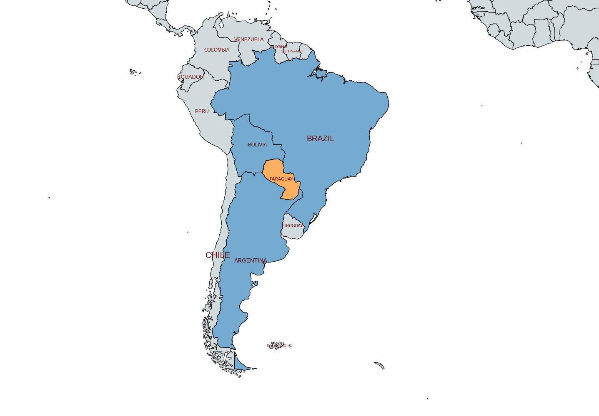
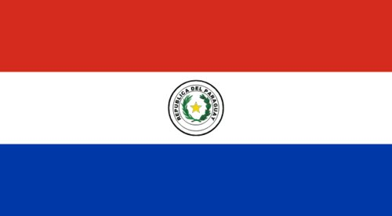
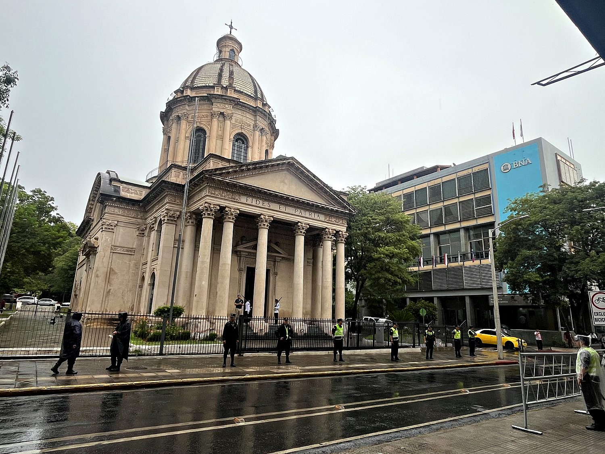
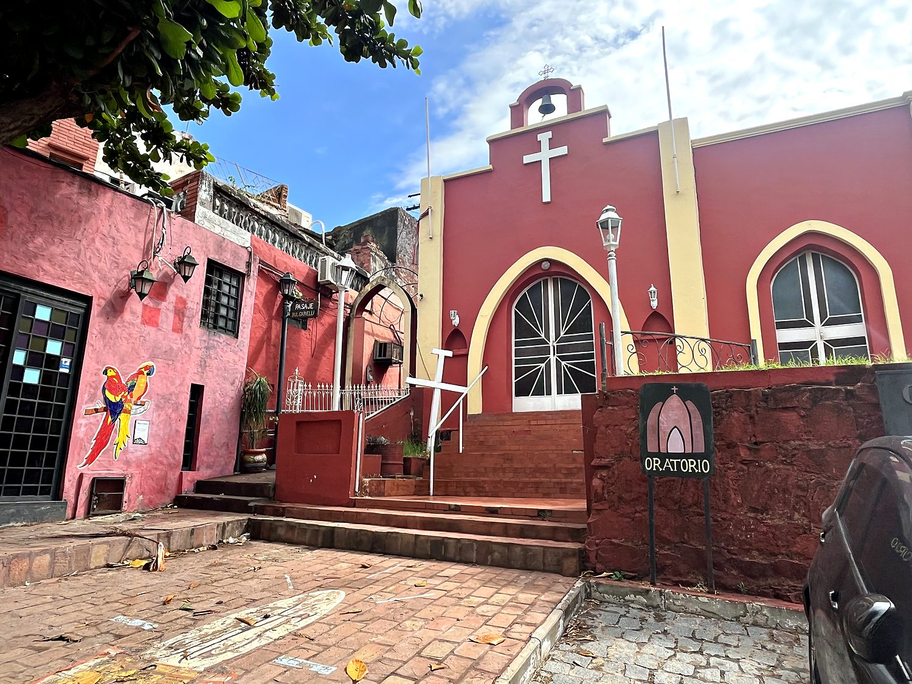
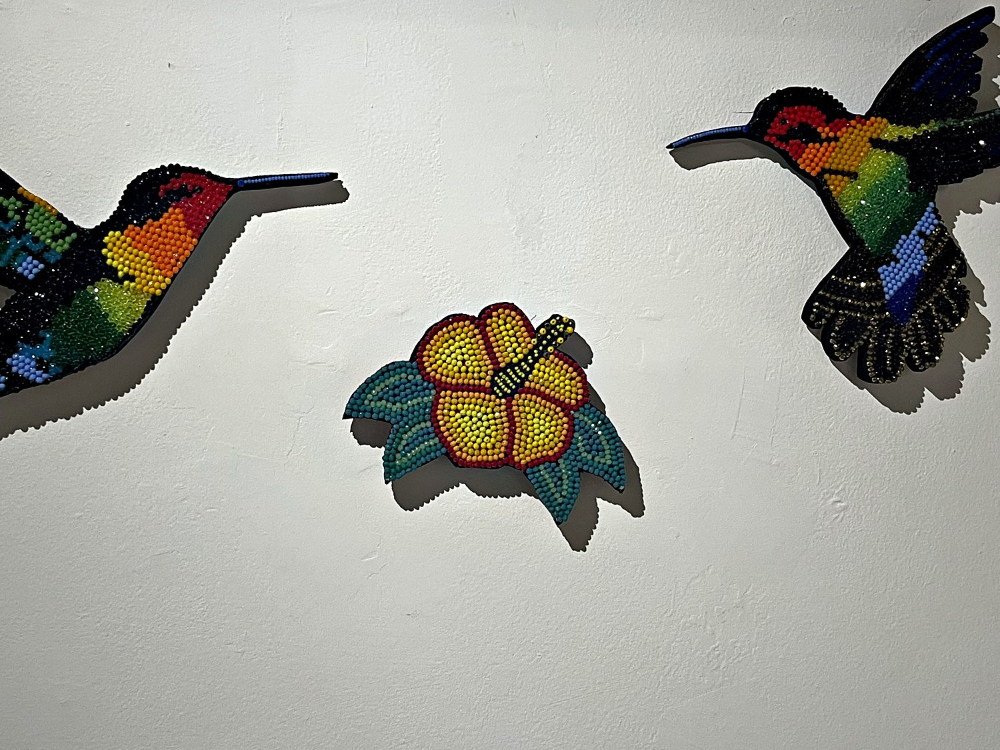

Paraguay is a landlocked nation that even seasoned travelers tend to skip, and one of the least-visited countries in South America. Which is precisely why I was determined to see it. My friend Allen and I crossed in from Brazil over the Friendship Bridge into Ciudad del Este, a gloriously chaotic border city that functions as an enormous duty-free bazaar. We wandered around discount malls and ate suspiciously excellent Lebanese food before catching an overnight bus to the capital. The bus, I should note, was pure luxury, with near-flat reclining seats that let me arrive in Asunción at 4am almost fully human. Over a rainy day of exploring I read up on Paraguayan history and was genuinely startled by how strange and dramatic it turned out to be: a saga of hermit dictators, near-total annihilation, and one of the most quietly radical experiments in national identity anywhere in the Americas.
Asunción is one of the oldest cities in the Americas. It was founded by Spanish conquistadors in 1537 and was nicknamed the “Mother of Cities” for the expeditions it launched to settle Buenos Aires and others across the continent. Strung along the Paraguay River, it is a low-slung, faded-grand sort of capital, where crumbling colonial mansions sit beside government palaces and the occasional stray protest. On the day we visited, a peaceful but firecracker-punctuated demonstration against the government was working its way through the streets. Its centerpiece is the Palacio de los López, the salmon-pink presidential palace glowing in the evening light, pictured above. Nearby, the waterfront was quietly finishing a sunrise over the river while a bust of Mahatma Gandhi looked on, and vendors passed around tereré, the ice-cold yerba mate infusion that Paraguayans seem to drink more or less incessantly.

Paraguay's history is unlike any other in the region, and it begins with a man who styled himself simply “El Supremo.” After independence from Spain, Dr. José Gaspar Rodríguez de Francia ruled from 1814 to 1840 as an absolute dictator who sealed the country off from the outside world almost entirely, banning foreign trade and even foreign correspondence. His most extraordinary decree forbade members of the Spanish colonial elite from marrying one another, compelling them instead to marry Indigenous or mixed-race Paraguayans. This was a deliberate, top-down effort to dissolve the old aristocracy and forge a single mestizo nation. The result is that today Paraguay is genuinely bilingual, and Guaraní, an Indigenous language, is spoken by the great majority of the population and holds equal official status with Spanish. This makes Paraguay the only country on the continent where an Indigenous tongue is the language of the whole nation rather than a marginalized minority.

That resilience was tested almost to destruction. Between 1864 and 1870, under the ruinous ambition of Francisco Solano López, Paraguay fought the War of the Triple Alliance against Brazil, Argentina, and Uruguay all at once. It lost so catastrophically that it is often called the deadliest war in modern Latin American history, killing an estimated 60-70% of the entire population and as many as nine in ten of its adult men. The country clawed its way back, even winning the brutal Chaco War against Bolivia in the 1930s, before falling under Alfredo Stroessner, whose 35-year dictatorship (1954–1989) ranked among the longest and most repressive on the continent. Modern Paraguay carries all of this lightly, and adds its own quirks: it is one of the last countries on Earth to formally recognize Taiwan over China, a diplomatic loyalty it commemorates with its own monument in the capital.
The Panteón Nacional de los Héroes, a domed neoclassical mausoleum modeled loosely on Les Invalides in Paris, is where Paraguay keeps its dead heroes and, with them, its complicated relationship to its own catastrophes. Inside lie Carlos Antonio López and his son Francisco Solano López, who are now venerated as a national martyr, alongside unknown soldiers and the child conscripts of that conflict. Guarded by soldiers even in the drizzle when I passed, it is a moving reminder that Paraguay has chosen to remember the men who nearly destroyed it not with blame but with a strange, defiant pride.

For all its heavy history, Asunción also knows what to do with a paint bucket. Loma San Jerónimo is a small hillside neighborhood that reinvented itself as the city's most colorful barrio. Its lanes are lined with candy-bright houses, mosaic staircases, and murals, making it a grassroots piece of urban revival that turned a once-overlooked quarter into a genuine draw. Wandering its painted steps felt like the cheerful counterpoint to the solemnity downtown: the Paraguay that gathers to drink tereré, root ferociously for its football team, and simply get on with enjoying itself.

I finished at the Museo del Barro, one of the finest museums of Indigenous and folk art in South America, where these beaded hummingbirds and hibiscus caught my eye. They speak to the deep Guaraní and mestizo craft traditions woven through Paraguayan culture: the same fusion of Indigenous and European that Dr. Francia once engineered by decree, here rendered not in law but in thousands of tiny, luminous beads. For a country so often overlooked, Paraguay turned out to be one of the most genuinely surprising places I have been, fresh proof that the countries nobody tells you to visit are frequently the ones most worth the trip.
